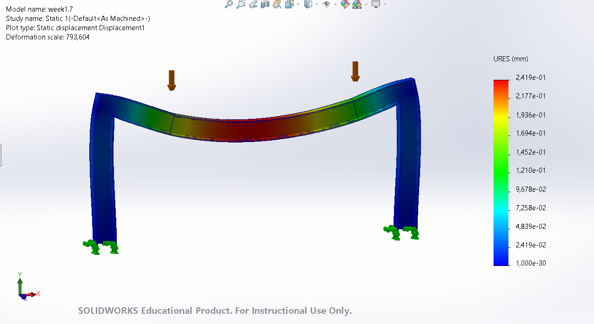
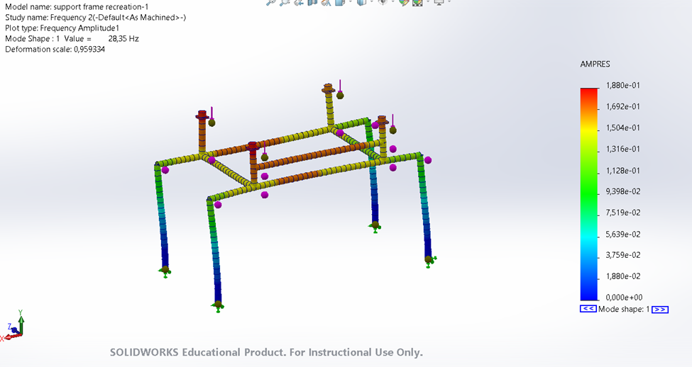
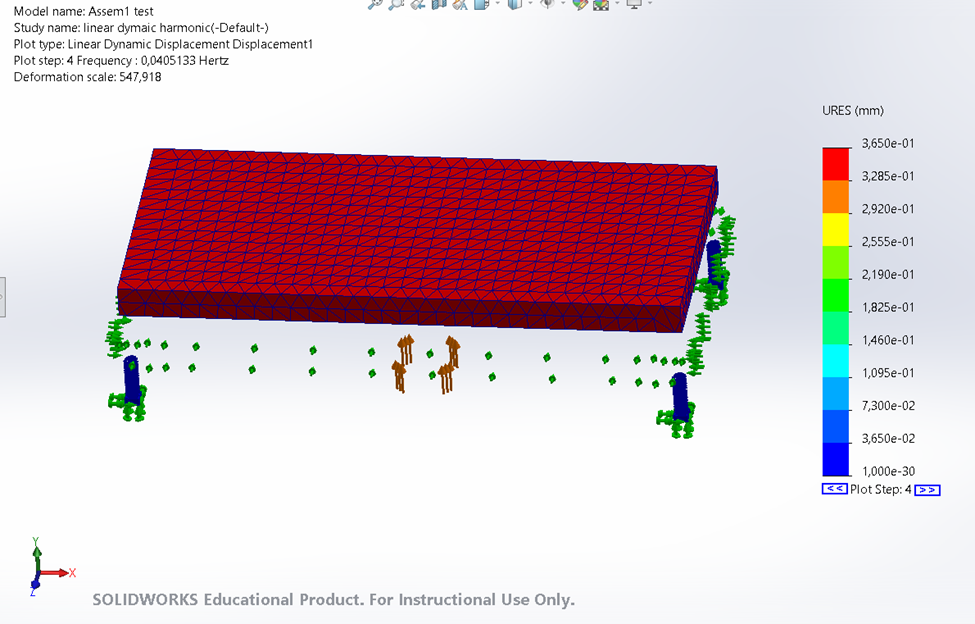

Project Summary
Conducted a full structural and dynamic analysis of an industrial vibratory conveyor frame, then produced a validated redesign. Static FEM simulations identified high-deflection zones in the original I-beam frame, which was replaced with 80 × 80 × 5 mm hollow box sections (alloy steel) — reducing maximum deflection from 8.6 mm to 0.17 mm. A frequency study then confirmed the redesigned frame's natural frequency shifted from 28.35 Hz to 14.88 Hz, establishing a safe 18 Hz margin from the 33 Hz operating excitation frequency.
Deflection: Original vs. Redesigned

Resonance & Harmonic Study
The original frame operated at 28.35 Hz — dangerously close to the 33 Hz drive frequency. The redesigned frame was tuned to 14.88 Hz, providing an 18 Hz safety margin. A harmonic linear dynamic sweep (0–33 Hz) confirmed the redesigned frame avoids resonance-driven deflection spikes entirely.


Summary & Outcomes
The hollow box-section redesign met all structural objectives: maximum deflection reduced from 8.6 mm to 0.17 mm, natural frequency shifted from 28.35 Hz to 14.88 Hz, and a safe 18.12 Hz resonance margin established. All analytical results were confirmed within 1% by SolidWorks FEM simulations. The project was delivered as a full technical report with methodology, simulation screenshots, and recommendations for physical prototype validation.